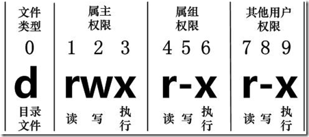

查看文件
直接使用ls命令查看。
输出结果为code test.txt。
但是，部分文件是隐藏文件，这时候就需要使用ls -a命令查看。其中，以.开头的就代表是隐藏文件(夹)。
1
2
3
4
| huii@HUII-PC:~$ ls -a
. .bash_logout .config .local .python_history .viminfo test.txt
.. .bashrc .dbus .motd_shown .ssh .vscode-server
.bash_history .cache .lesshst .profile .sudo_as_admin_successful code
|
可以使用ls -l命令查看文件属性。
1
2
3
4
| huii@HUII-PC:~$ ls -l
total 8
drwxr-xr-x 6 huii huii 4096 Feb 17 13:47 code
-rw-r--r-- 1 huii huii 256 Mar 7 10:36 test.txt
|
命令可以组合使用，如ls -al,查看全部文件的属性。
1
2
3
4
5
6
7
8
9
10
11
12
13
14
15
16
17
18
19
20
21
| huii@HUII-PC:~$ ls -al
total 72
drwxr-x--- 9 huii huii 4096 Mar 7 20:56 .
drwxr-xr-x 3 root root 4096 Feb 16 23:34 ..
-rw------- 1 huii huii 8264 Mar 11 23:57 .bash_history
-rw-r--r-- 1 huii huii 220 Feb 16 23:34 .bash_logout
-rw-r--r-- 1 huii huii 3866 Mar 1 14:06 .bashrc
drwxr-xr-x 4 huii huii 4096 Mar 1 13:51 .cache
drwx------ 6 huii huii 4096 Mar 5 11:25 .config
drwx------ 3 huii huii 4096 Mar 5 11:25 .dbus
-rw------- 1 huii huii 39 Mar 7 20:56 .lesshst
drwxr-xr-x 5 huii huii 4096 Mar 1 13:51 .local
-rw-r--r-- 1 huii huii 0 Mar 12 11:25 .motd_shown
-rw-r--r-- 1 huii huii 807 Feb 16 23:34 .profile
-rw------- 1 huii huii 0 Feb 17 00:17 .python_history
drwx------ 2 huii huii 4096 Feb 17 13:29 .ssh
-rw-r--r-- 1 huii huii 0 Feb 17 09:52 .sudo_as_admin_successful
-rw------- 1 huii huii 3585 Mar 1 13:27 .viminfo
drwxr-xr-x 5 huii huii 4096 Feb 17 09:47 .vscode-server
drwxr-xr-x 6 huii huii 4096 Feb 17 13:47 code
-rw-r--r-- 1 huii huii 256 Mar 7 10:36 test.txt
|
文件属性
以-rw-r--r-- 1 huii huii 256 Mar 7 10:36 test.txt为例，文件属性可以分为以下几部分。
文件属性Linux文件属性详述 - JZEason - 博客园 (cnblogs.com)
-rw-r--r--。文件类型权限，该字段共有10位，其中第一位表示文件种类，2-4，5-7，8-10分别表示文件拥有者、用户组、非本人且非用户组对应的权限。1。链接数，表示多少文件名链接到此节点。huii。第一个表示文件/目录拥有者账号。huii。第二个表示文件所属用户组。256。表示文件容量大小，单位为Bytes。Mar 7 10:36。最近修改时间。test.txt。文件名。
文件类型权限
文件种类
即文件类型权限中的第一位字符。
-表示一般文件。d表示目录。l表示链接文件(link file)。b表示设备文件里面的可供存储的周边设备。c设备文件里面的串行端口设备。
文件权限
文件权限位于2-10位，每三个为一组，每组均为rwb和-的组合。
- r表示read，可读。
- w表示write，可写。
- x表示execute，可执行
rwb的顺序是固定的，当有该权限的时候，出现对应的字母，否则用-进行占位。
如：具有可读可执行权限，则表示为r-x。

类型与权限Linux 文件基本属性 | 菜鸟教程 (runoob.com)
修改文件权限
进制转换
rwb这三个权限都各只有两种状态，因此可以用三位二进制进行表示，可以从000至111分别表示---至rwb。其对应的十进制值如下。因此可以便捷地使用三个0-7的数字来分别表示对应的权限。
| 权限 |
二进制 |
十进制 |
| —- |
000 |
0 |
| —x |
001 |
1 |
| -w- |
010 |
2 |
| -wx |
011 |
3 |
| r— |
100 |
4 |
| r-x |
101 |
5 |
| rw- |
110 |
6 |
| rwb |
111 |
7 |
直接赋予权限
修改权限的语法为chmod [-R] xyz 文件或目录。
其中
- -R为可选项，表示对当前目录及目录下所有文件进行操作。
- xyz为三个数字，表示需要赋予的权限，如770表示所有者和群组有rwb权限，其他人则无。
1
2
3
4
5
| huii@HUII-PC:~$ chmod 770 test.txt
huii@HUII-PC:~$ ls -l
total 8
drwxr-xr-x 6 huii huii 4096 Feb 17 13:47 code
-rwxrwx--- 1 huii huii 256 Mar 7 10:36 test.txt
|
增、删、改部分权限
权限对应到三种身份，可以使用四种符号进行表示，可组合使用。
- u。user，文件拥有者。
- g。group，用户组。
- o。other，其他用户。
- a。all，所有用户。
对应着三种操作。
- =。设置为某权限。
- +。添加某权限。
- -。移除某权限。
可操作的权限有三种，即rwx，可组合。
在-rwxrwx--- 1 huii huii 256 Mar 7 10:36 test.txt基础上对权限进行处理。
将group和other的权限修改为wx
1
2
3
4
5
| huii@HUII-PC:~$ chmod go=wx test.txt
huii@HUII-PC:~$ ls -l
total 8
drwxr-xr-x 6 huii huii 4096 Feb 17 13:47 code
-rwx-wx-wx 1 huii huii 256 Mar 7 10:36 test.txt
|
所有人去除w权限。
1
2
3
4
5
| huii@HUII-PC:~$ chmod a-w test.txt
huii@HUII-PC:~$ ls -l
total 8
drwxr-xr-x 6 huii huii 4096 Feb 17 13:47 code
-r-x--x--x 1 huii huii 256 Mar 7 10:36 test.txt
|
other添加w权限。
1
2
3
4
5
| huii@HUII-PC:~$ chmod o+w test.txt
huii@HUII-PC:~$ ls -l
total 8
drwxr-xr-x 6 huii huii 4096 Feb 17 13:47 code
-r-x--x-wx 1 huii huii 256 Mar 7 10:36 test.txt
|
目录/文件夹权限的含义
r
具有读取该目录结构列表的权限，相当于是箱子里的灯光。
w
具有改动目录结构的权限。
- 建立新的文件与目录;
- 删除已经存在的文件与目录（不论该文件的权限是什么 )
- 将已存在的文件或目录进行更名;
- 移动该目录内的文件、目录位置。
x
进入该目录的权限，相当于是打开箱子的钥匙。
因此，目录必须要有x权限，r或者w权限才有意义。
删除权限讨论
即使对该文件拥有完整的权限，也无法对该文件进行删除。rwx权限是针对文件内容而言，与文件名无关。
如果要删除文件，需要具有文件所属目录的wx权限。
1
2
3
4
5
6
7
8
9
10
11
12
13
14
15
16
17
18
19
20
21
22
23
24
25
26
27
| huii@HUII-PC:~$ mkdir test1#创建test1目录
huii@HUII-PC:~$ ls -l
total 12
drwxr-xr-x 6 huii huii 4096 Feb 17 13:47 code
-r-x--x-wx 1 huii huii 256 Mar 7 10:36 test.txt
drwxr-xr-x 2 huii huii 4096 Mar 12 13:05 test1
huii@HUII-PC:~$ cd test1/
huii@HUII-PC:~/test1$ touch t1#创建t1文件
huii@HUII-PC:~/test1$ cd ..
huii@HUII-PC:~$ chmod u=x test1/#只给test1目录x权限
huii@HUII-PC:~$ ls -l
total 12
drwxr-xr-x 6 huii huii 4096 Feb 17 13:47 code
-r-x--x-wx 1 huii huii 256 Mar 7 10:36 test.txt
d--xr-xr-x 2 huii huii 4096 Mar 12 13:05 test1
huii@HUII-PC:~$ cd test1/
huii@HUII-PC:~/test1$ ls#没有查看权限
ls: cannot open directory '.': Permission denied
huii@HUII-PC:~/test1$ rm t1#没有删除权限
rm: cannot remove 't1': Permission denied
huii@HUII-PC:~/test1$ cd ..
huii@HUII-PC:~$ chmod u=wx test1#给test1目录wx权限
huii@HUII-PC:~$ cd test1/
huii@HUII-PC:~/test1$ ls#没有查看权限
ls: cannot open directory '.': Permission denied
huii@HUII-PC:~/test1$ rm t1#有删除权限
huii@HUII-PC:~/test1$
|